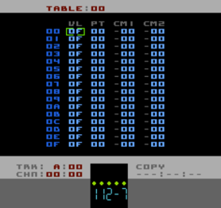

Table Editor Page
Tables are a composite way to manipulate the audio synthesis in real time. If you're familiar with LSDJ you'll be at an advantage (though there are a few differences in Pulsar that you'll have to watch out for). If not, this might be a bit heavy going. Some experimentation and patience will pay off though - Tables are probably the most powerful aspect of Pulsar (as they are in LSDJ)
Tables are actually valid for all five Tracks (A, B, C, D and E) though operation differs slightly for Track C (mainly because of lack of amplitude on that Track) and drastically for Track E (mainly because the parameters do different things and many of the Commands are not valid for Track E).
You can read about how Tables are implemented for Track E in the section 'Quirks And Bugs'. The reason it is relegated to that section is because it's still experimental and may change at some point in the future.
Let's get the parameters out of the way first and then some explanations will follow:
|
scales the output volume of the current note. 00 is silent, 08 is about 50% and 0F is maximum (no scaling). For Track C, 00 is silent and any other value is full volume (Track C has no scalable amplitude, it's either on or off) |
|
specifies the Pitch offset applied to the current note. You can specify positive, negative or absolute pitch using this parameter.00 = no offset (original pitch of note)01 to 50 = positive offsetFF to B1 = negative offset51 to B0 = absolute pitch, 51 being lowest note and B0 being the highest |
|
whereas in a Pattern there is only one Command column, in a Table there are two. The is the first one. A value of '-xx' means no Command. |
|
and this is the second Command column. A value of '-xx' means no Command. |
TABLE OPERATION
There are two ways to trigger a Table. The first occurs at the start of each new note as long as you've specified a Table number in the Instrument definition that the note is using. The other way is by using a Run Table command (Axx) in a Pattern (actually you can use a Run Table command inside another Table too but that's just for the masochists!)
What normally happens when a Table is triggered is that, starting at step 00, the Volume and Pitch offsets are added to the current playing note, then the two Command columns are processed. Then, while the note is still playing and at a preset rate, the next and subsequent Table steps are processed until the end of the Table (step 0F). At this point the Table loops back to step 00 and continues until the note is ended.
SPECIAL FUNCTIONS
There are some Commands that have a special function within Tables and affect how the Table is processed.
Zxx02 is the slowest speed while FF is the fastest. 00 and 01 run the table in one of two sync modes
00
0100) but, while in Mode 00, the Table will start at the first step with each new note, in mode 01 the Table will run freely and so will not restart when a new note is played.
Hxx/Jxx
In the case of the Hxx command, note that it only works in the CM2 column because of the fact that the jump happens immediately as opposed to after the step has been processed. In this way you can put another Command in the CM1 column which will be processed before the Hxx jump.